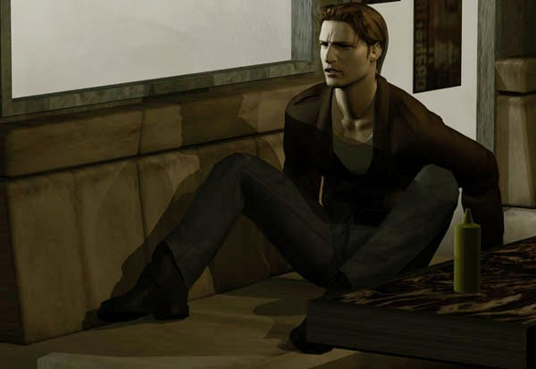
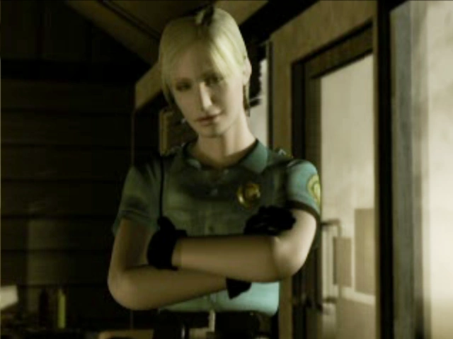
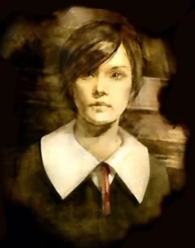
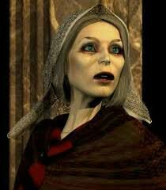
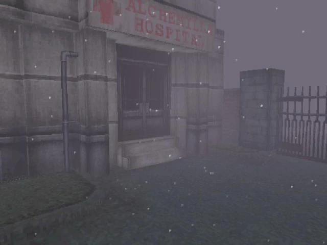
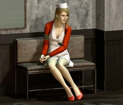
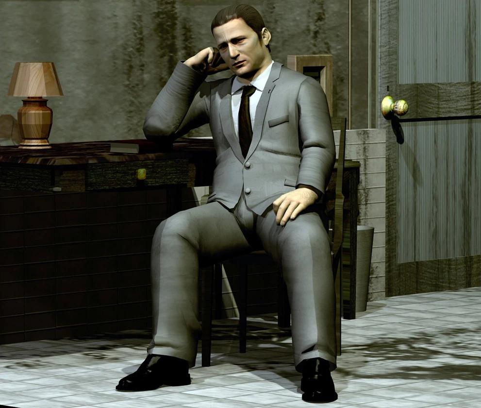

Silent Hill es la primera entrega de la serie de videojuegos Silent Hill, una franquicia de gran éxito de
juegos de aventura y survival horror. Silent Hill fue desarrollado por Team Silent y publicado por Konami.
Fue publicado para la PlayStation de Sony en Norteamérica el 31 de enero de 1999 y hasta el momento ha
generado muchas secuelas, una serie de novelas gráficas, dos películas y otras obras derivadas.
Silent Hill es un juego de acción y Survival Horror. El juego usa efectos de neblina y oscuridad para
ocultar las limitaciones de hardware que el juego posee. Este aspecto, ha sido alabado por la crítica ya que
ayuda a alimentar la atmósfera terrorífica del juego.
El juego cuenta la historia de Harry Mason, un escritor de 32 años que se adentra en una aventura cargada de
terror y angustia mientras busca a su hija Cheryl Mason que ha desaparecido en esta pesadilla. El
juego posee cinco finales diferentes, cuatro de ellos de corte serio y el último un final de broma.
Tras su lanzamiento, Silent Hill recibió críticas positivas y fue un éxito comercial. Es considerado título
definitorio del survival horror.
Trama

Prólogo
Tras chocar con su vehículo a las afueras del pueblo de Silent Hill, Harry despierta de su desmayo para
encontrarse con que su hija Cheryl ha desaparecido. Harry sale de la zona para mirar a su alrededor.
El cielo se oscureció, oyéndose como de muy lejos el sonido de una sirena y se encuentra con que su entorno
ha cambiado por completo. Harry sigue en el callejón. Momentos después es atacado por pequeños monstruos.
Harry es acorralado y eventualmente "asesinado".

Luego de eso, se despierta en un restaurante abandonado llamado. Una oficial llamada Cybil Bennett aparece y
tras una breve conversación sale del restaurante en busca de ayuda. Harry agarra una radio que se encuentra
en el café. Harry descubre que la radio emite un sonido cuando hay monstruos cerca.
Siguiendo una pista dejada por su hija en el callejón de su sueño previo, Harry sigue su camino hasta llegar
a la Escuela primaria Midwich.

Escuela e Iglesia
Al llegar, la escuela al parecer se encuentra abandonada desde hace tiempo. Harry comienza a explorar la
escuela, y finalmente logra desbloquear la torre del reloj en el patio de la escuela.
Al llegar al otro lado de la instalación a través del patio, el mundo ha cambiado al "Otro Mundo" donde
Harry se encuentra un extraño símbolo pintado en el centro del patio de la escuela.
En la escuela del "Otro Mundo", Harry va a la sala de calderas y dentro la luz es proyectada por
un cuerpo en llamas y es iluminada una criatura conocida como el Split Head.

Aparece una joven mujer, Alessa Gillespie. Mira a Harry y desaparece en el aire. Cuando Harry sale del
colegio, oye en la distancia un sonido de una campana de la iglesia y se dirige hacia ella donde se ve a una
anciana rezando en un altar. En una conversación que Harry no comprende del todo, la anciana se dice llamar
Dahlia Gillespie. Ella le da a Harry un elemento místico llamado el Flauros y le dice que se dé prisa
hacia el hospital.
Hospital
Harry llega al Hospital Alchemilla, donde se encuentra a Michael Kaufmann, un doctor que está tan
desconcertado como Harry sobre las circunstancias actuales. Poco después de esta reunión, Harry sufre un
nuevo cambio al Otro Mundo, transformándose el hospital en la versión distorsionada del Otro Mundo.
A lo largo del camino se encuentra también con Lisa Garland, una enfermera aterrorizada. De vuelta al mundo
normal Dahlia reaparece y le cuenta sobre la Marca de Samael. Se reúne nuevamente con Cybil, la cual ha
visto a una niña en el lago.
Los dos encuentran un altar escondido en una tienda de antigüedades, pero Harry desaparece de la vista
de Cybil. Harry, por su parte, se encuentra de nuevo en el hospital con Lisa, quien le da
instrucciones para llegar al lago, pero también le dice a Harry que siente que ella "no debe dejar este
lugar".



Parque de atracciones
En el camino hacia el lago, Harry cruza un canal de agua por medio del sistema de alcantarillado y entra
en la Zona turística. El jugador puede determinar el destino de Kaufmann eligiendo ayudarlo o no en el Bar
de Annie. Poco después, la pesadilla del Otro Mundo comienza a apoderarse del pueblo por completo.
Al reagruparse con Cybil, decidió parar la finalización de la Marca a petición desesperada de Dahlia,
Harry se dirige al faro y Cybil al Parque de atracciones Lakeside. Harry ve a Alessa, y al símbolo, en la
parte superior del faro antes de ir al parque de atracciones ahora influenciado por el Otro Mundo.
En el carrusel del parque de atracciones, Cybil aparece, poseída por un parásito. El jugador puede optar por
salvar o matar a Cybil. Con Alessa apareciendo una vez más, sin saberlo, Harry utiliza el Flauros para
atraparla. Dahlia aparece, revelando que ella lo manipuló para capturarla, ya que es el único que sería
capaz de acercarse a ella sin que representara una amenaza, y que Alessa es en realidad la hija de Dahlia.
"Ninguna Parte"
Con los poderes de Alessa fuera de control, Harry se despierta para encontrarse a sí mismo de nuevo en
el mundo distorsionado que se asemeja al del hospital, conocido simplemente como "Ninguna Parte".
Se encuentra con Lisa, la cual se ha dado cuenta de que ella no es diferente de las otras enfermeras.
Ella comienza a transformarse en frente de Harry horrorizado, que huye cuando se acerca a él, a pesar de que
ella sigue siendo claramente simpática.
El diario de Lisa, que se encuentra a la izquierda en la sala en
donde ella se transforma, explica que ella fue la enfermera que atendió a Alessa.
En "Ninguna Parte", Harry ve un flashback de una reunión entre Dahlia, Kaufmann y dos médicos de culto. Él
pronto encuentra a Dahlia y a Kaufmann (y a Cybil si se la salvó anteriormente), así como a una figura en
una silla de ruedas y a Alessa arrodillada.
Parte Final
Tanto el flashback como las palabras de Dahlia explican que Dahlia sacrificó a su hija en un intento de
fomentar y llevar a cabo el nacimiento del culto a la deidad que se encuentra dentro de ella.
De este modo, el alma de Alessa fue dividida en dos por el odio, y la divinidad no pudo nacer, por lo que un
hechizo fue lanzado por Dahlia en el último momento, antes de que la otra mitad del alma volviera a Alessa.
La otra mitad del alma se manifiesta como Cheryl, a quien Harry y su mujer encuentran como un bebé en la
carretera a las afueras de Silent Hill, y al cual adoptan posteriormente.
En el presente, Alessa, percibe el retorno de Cheryl a través de un aumento en su poder, manifestándose ella
en el pueblo para colocar las marcas que Harry ha ido viendo en un intento de mantener a raya a la deidad.
Con el plan de Alessa obstruido y las dos mitades de su alma juntas nuevamente, la criatura de la deidad
comienza a manifestarse. Kaufmann aparece y lanza un frasco de Aglaofotis a esa entidad.
Dependiendo de las acciones del jugador, la deidad aparece como Incubus o Incubator. Ambas formas matan a
Dahlia instantáneamente, antes de que la deidad se vuelva hacia Harry, quien finalmente lo derrota.
Finales
Final Good+ (Muy bueno):
Salva a Cybil y completa la misión secundaria para salvar a Kaufmann: Cybil
intenta disparar a Dahlia, pero falla y Alessa y Cheryl se unen, convirtiéndose en Incubator.
Kaufmann aparece, lanzando el Aglaophotis hacia el Incubator. Harry, Cybil y Kaufmann tratan de escapar,
pero Lisa Garland cubierta de sangre aparece y arrastra a Kaufmann con ella al abismo.
Harry y Cybil continúan su fuga. El Incubator es consumido por las llamas y Cybil y Harry logran escapar
junto con el bebé. La canción de este final es Tears
Of...
Final Good (Bueno):
Mata a Cybil y completa la misión secundaria para salvar a Kaufmann: Alessa y
Cheryl se unen, convirtiéndose en Incubator. Kaufmann aparece, lanzando el Aglaophotis
hacia el Incubator. Cuando es golpeado con el líquido, el Incubator cae al suelo gritando mientras
Incubus emerge de su espalda. El Incubus mata a Dahlia. Harry derrota al Incubus y el Incubator le
da un bebé y le muestra la ruta de escape.
Cuando Harry escapa, Kaufmann trata de seguirlo, pero es detenido por Lisa. El Incubator es consumido por
las llamas. Según el Book of Lost Memories este es el final verdadero del juego. La canción de este final es
Killing Time.
Final Bad (malo):
Salva a Cybil pero no salves a Kaufmann: Cybil aparece y trata de matar a Dahlia, pero
falla. Alessa y Cheryl se unen, convirtiéndose en Incubator, y matan a Dahlia. Harry entonces lucha
contra el Incubator que, después de ser derrotado, le agradece a Harry por matarlo. Harry entonces se
derrumba de dolor por la pérdida de su hija. Cybil se acerca a Harry, abofeteandolo para que se deje de
lamentar, y le dice que tienen que irse antes de que el Otro Mundo se derrumbe a su alrededor. La canción de
este final es She.
Final Bad + (Muy Malo):
Mata a Cybil y no salves a Kaufmann: Alessa y Cheryl se unen, convirtiéndose en
Incubator, y matan a Dahlia. Harry entonces lucha contra el Incubator que cuando es derrotado le
agradece a Harry. Harry se derrumba de dolor por la pérdida de su hija, y entonces se muestra
inconsciente en su coche, lo que sugiere que todo lo que pasó en Silent Hill era tan solo un sueño
de Harry antes de morir. La canción de este final es
Esperándote.
Final UFO (OVNI):
Cuando Harry utiliza el talismán en cinco lugares, el último de ellos en la parte
superior del faro, se verá a un grupo de ovnis en el cielo. El estilo de imagen cambia de tercera dimensión
a uno más o menos animado, como de cómic. Harry les pregunta a los extraterrestres si han visto a su hija,
pero es derribado y llevado a su nave. Los alienígenas despegan y aparecen los créditos finales.